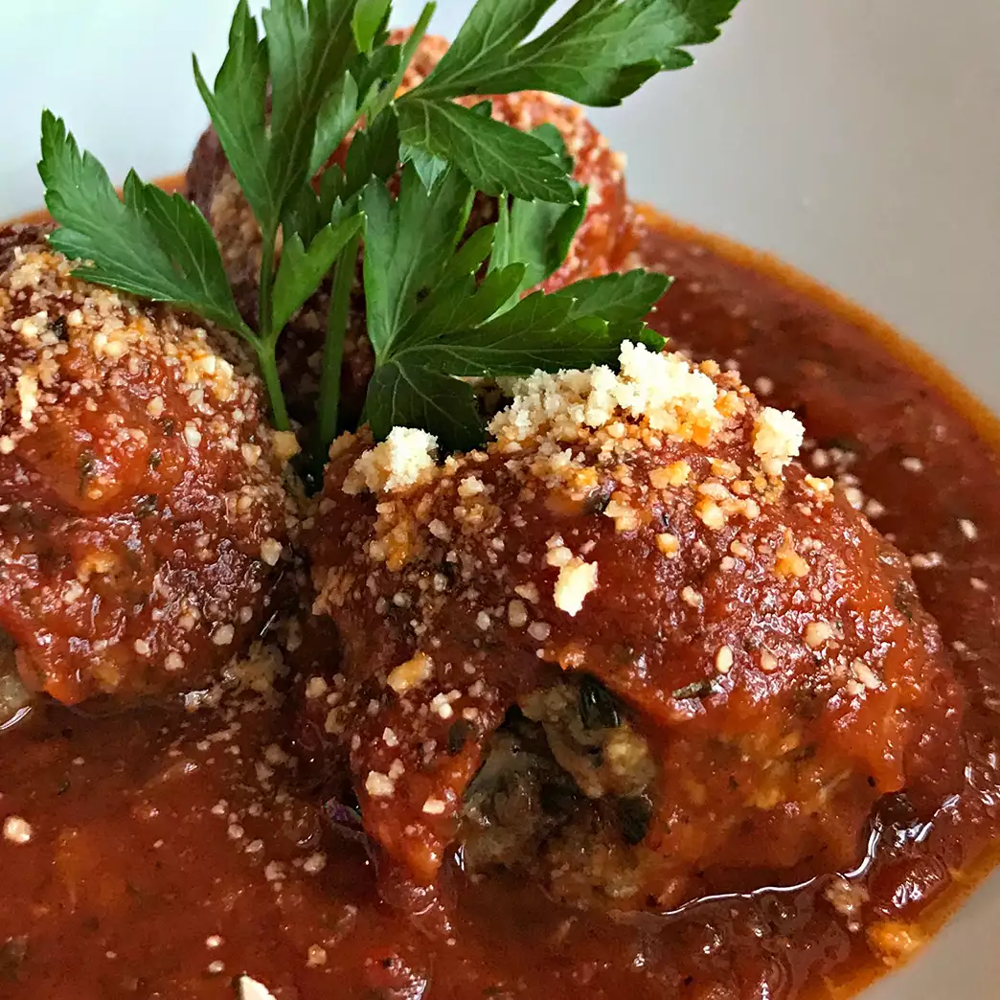

Italian Meatballs

Description
Homemade meatballs are a very easy to make, and since we skip the very messy step of pan-frying these before
they hit the sauce, it becomes downright simple. Here I use a standard half-beef/half-pork mixture. You can
substitute water or beef broth for the milk, if preferred.
Ingredients
- ⅓ cup plain bread crumbs
- ½ cup milk
- 2 tablespoons olive oil
- 1 onion, diced
- 1 pound ground beef
- 1 pound ground pork
- 2 eggs
- ¼ bunch fresh parsley, chopped
- 3 cloves garlic, crushed
- 2 teaspoons salt
- 1 teaspoon ground black pepper
- ½ teaspoon red pepper flakes
- 1 teaspoon dried Italian herb seasoning
- 2 tablespoons grated Parmesan cheese
Steps
- Cover a baking sheet with foil and spray lightly with cooking spray.
- Soak bread crumbs in milk in a small bowl for 20 minutes.
- Heat olive oil in a skillet over medium heat; stir in onion. Cook and stir until onion has softened and turned
translucent, about 5 minutes. Reduce heat to low and continue cooking and stirring until onion is very tender,
about 15 minutes more.
- Gently stir beef and pork together in a large bowl (do not overmix). Stir onions, bread crumb mixture, eggs,
parsley, garlic, salt, black pepper, red pepper flakes, Italian herb seasoning, and Parmesan cheese into meat
mixture with a rubber spatula until combined. Cover and refrigerate for about one hour.
- Preheat an oven to 425 degrees F (220 degrees C).
- Using wet hands, form meat mixture into balls about 1 1/2 inches in diameter. Arrange onto prepared baking sheet.
- Bake in the preheated oven until browned and cooked through, 15 to 20 minutes.